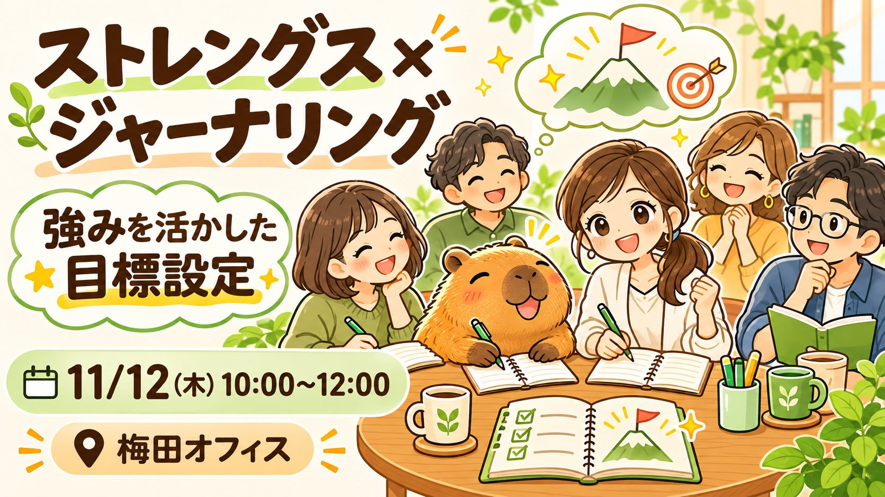
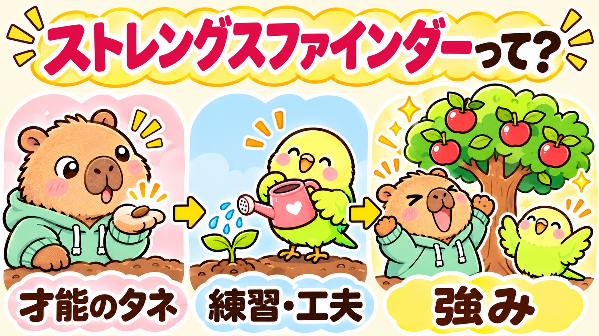
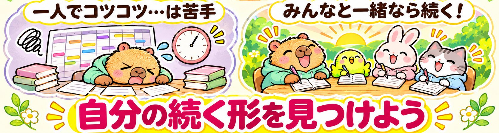
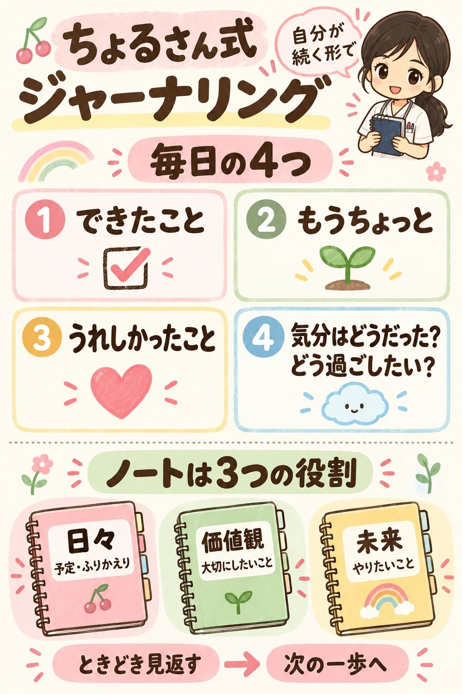
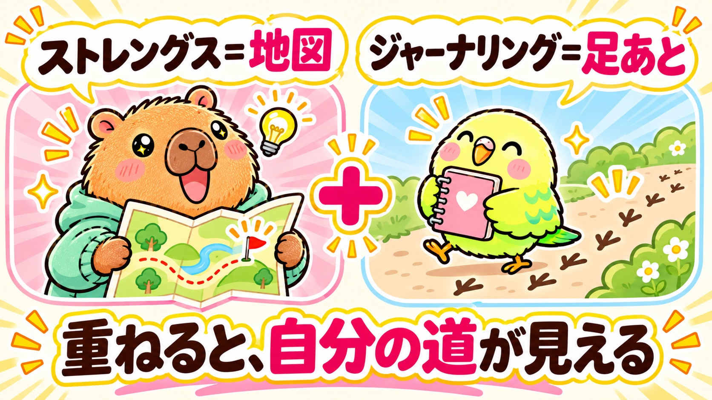
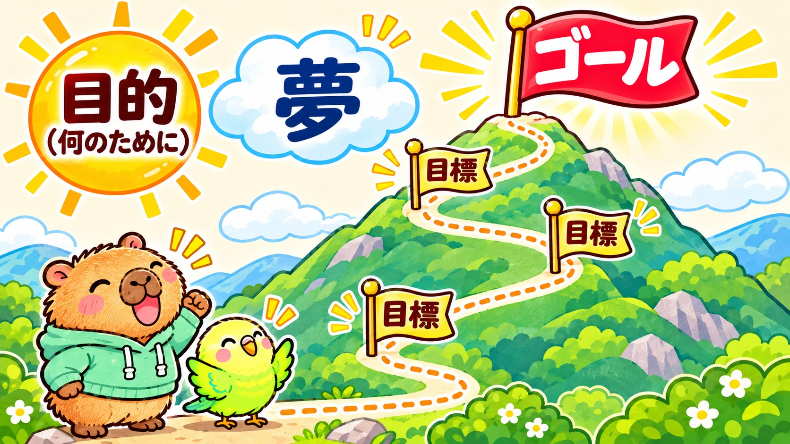
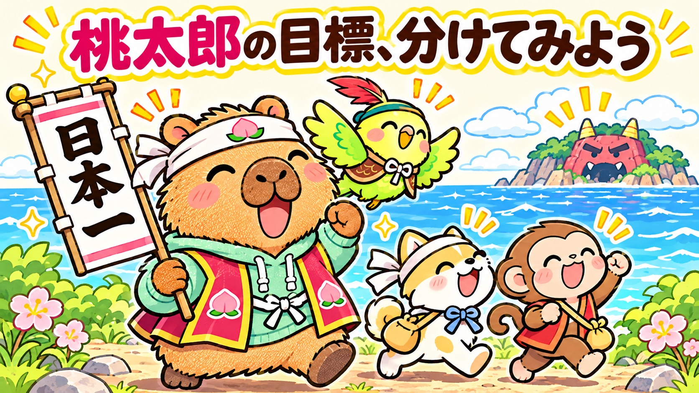
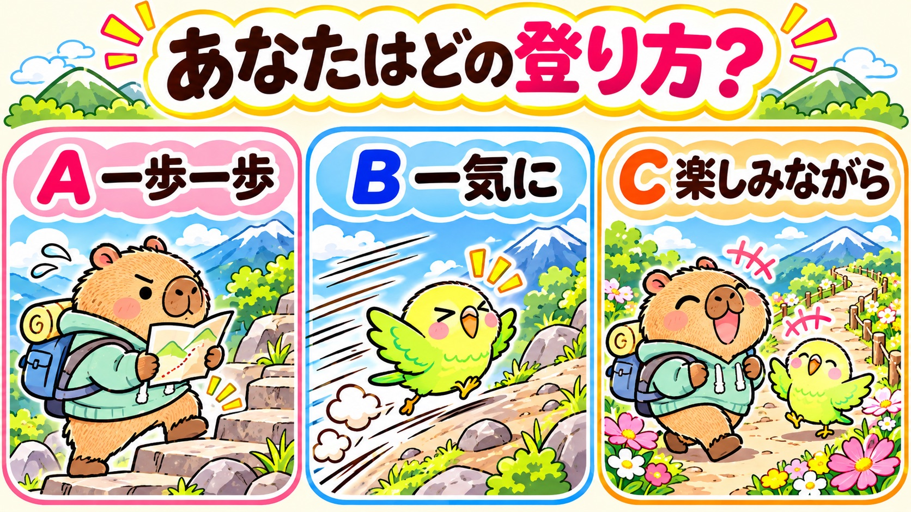
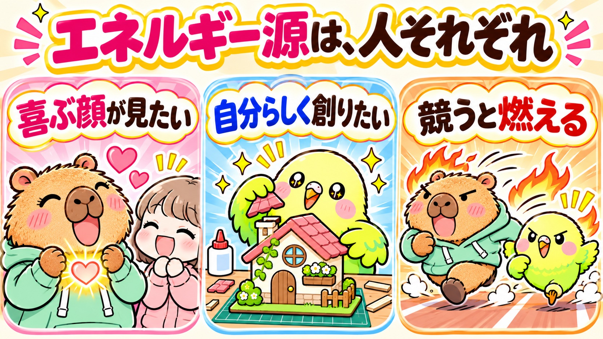

ストレングス×ジャーナリング 第2弾
強みを活かした目標設定
おけもん × ちょる

数字が燃える人、景色が燃える人、人の顔が燃える人。自分はどれ？
「べき」の目標を、自分の資質が喜ぶ言い方に書き換える。
帰ってから書く最初の一文まで、ここで決めて帰る。
うまく書くより、自分に正直に。書かない・話さない・パスも選べます。

つい自然に繰り返している「考え方・感じ方・行動」のクセを、34の言葉で教えてくれる道具。
34の資質が、自分に出やすい順に並ぶ。上位5つが「TOP5」。
下位は「苦手」より「あまり使わない道具」。性格や職業を決めつけるものでもない。
タネに練習と工夫を足して、はじめて「強み」になる。
ストレングスファインダー（CliftonStrengths®）は米Gallup社のアセスメント。まだ受けていなくても今日は大丈夫。34資質の一覧 ↗

目標志向 25位 達成欲 29位 規律性 27位
「目標を立ててコツコツ」は、私のいちばん遠い所。
1 調和性 2 共感性 3 アレンジ 4 親密性 5 最上志向
人と一緒・人の気持ち・組み合わせるのが好き。
そんな私が、9月26日から朝のノートを続けています。
続いた理由は、根性じゃなくて資質に合う形にしたから。

ちょるさんの「毎日の4つ」をそのままもらいました。
＋ 自由帳／やりたいこと／大切にしたいこと。
毎日全部を埋めなくても、一行だけでも、休む日があっても大丈夫。
実物のノートを開く（9/26〜11/11・みんなに見せる版）↗
起きるまではかなり、「うわぁ、行きたくない、やりたくないな」と思ったけど。9/26 初日の朝6時半
ちょっと不安。稼ぐ力に繋がっているのだろうか。10/1
そんな自分でもいいやん、と自分でオッケーを出す。まあ大丈夫だよ、なんとかなるし。10/5
やっぱり、自分で決めるって大事やなぁ🍀10/12 会をやると決めたら、記事が書けた日
正しいより楽しい。AIとワクワクを語っていたら夢が叶ってた10/16
ゴールは固く、道中は緩く。未来の自分のセルフイメージで10/19 ← 今日のテーマ、ここに書いてた
| 私がやったこと | 効いていた資質 |
|---|---|
| 宣言して、チャットと朝の会を作った | 調和性・親密性：人と一緒だと動ける |
| 「気分」と「明日どんな気分でいたい？」を書く | 共感性：数字より気持ちが燃料 |
| アプリ・AI・絵・投稿を組み合わせた | アレンジ：仕組みを組むのが楽しい |
| 型を毎週ちょっとずつ良くする | 最上志向：磨くのが好き |
| 「来年の誕生日に乾杯する」景色を書く | 未来志向（10位）：景色が見えると歩ける |
達成欲の高い人と同じやり方をしたら、私はしんどい。
自分の続く形を見つけるのが、いちばん大事。
未来から逆算して、目標を立てる。
ノートは3冊（日々・価値観・未来）。月末に1年の目標を見て、来月の目標を立てる。
「書いたら叶う、じゃなくて、書いて叶えに行く」
原点思考は34位。過去より未来。
同じ「4つの問い」を書いているのに、燃料が違う。
ちょるさんのやり方を私がそのまま真似したら、たぶん続かない。でも、2人とも続いている。
2人に共通して上位なのは「未来志向」と「最上志向」。ちょるさんの資質はご本人から聞いた上位の並び（4〜8つ目は順不同）。

診断結果は「あなたはこういう人」という名詞。読んで「へぇ」で終わりやすい。
日記は「今日こうした」という動詞。続けても、なぜ自分がそう動くのかが見えにくい。
重ねると、「わたしはなぜこれが好きで、どう進むと楽しいか」が読める。
今日「つい」やっていたことは？
それで、誰が・何が、少し良くなった？
その「つい」を、どんな未来に向けて使う？
前回までは Name と Claim。今日は Aim ＝ 目標 をいっしょに書きます。
Gallupの強み開発の枠組みを、この会向けに言い換えています。
| 資質の領域 | ジャーナルで筆が進む書き方 | 燃えやすい目標の形 |
|---|---|---|
| 実行力 達成欲・責任感・規律性 など | やった事を並べる。チェックを付ける。 | 数と期限。「◯日までに◯個」。消せる札。 |
| 影響力 活発性・コミュニケーション・最上志向 など | 誰に何を届けたか。人に話す前提で書く。 | 宣言できる目標。見てくれる人がいる舞台。 |
| 人間関係構築力 共感性・個別化・ポジティブ など | 誰と、どんな気持ちだったか。 | 「誰と・誰の笑顔のために」が入った目標。 |
| 戦略的思考力 着想・学習欲・未来志向・内省 など | 問い・気づき・仮説。なぜ？を書く。 | 景色と道筋。「なぜやるか」が腹落ちした目標。 |
考えるための目安です。資質の出方は人それぞれ。自分の実感がいちばんの答え。未受検の方は「どの行が自分っぽいか」で選べば大丈夫。

| 言葉 | ひとことで | 例 |
|---|---|---|
| 夢 | いつか叶えたい、心に描く願い。人と比べない。 | 世界の朝ごはんを食べ歩きたい |
| ビジョン | 叶った瞬間の景色と、その時の気持ち。 | 仲間と乾杯して笑っている |
| 目的 | 何のために。いちばん上に置くもの。 | ワクワクを循環させるため |
| ゴール | 期日つきの到達点。 | 来年の誕生日に◯◯で乾杯 |
| 目標 | ゴールまでの途中の目印。立て直していい。 | 今月、会を3回ひらく |
目的が抜けると、目標はノルマになる。目的はゆるがず、目標は何度でも。
谷口貴彦『ザ・コーチ』の定義を、この会向けに短く言い換えています。例はおけもん作。

桃太郎のお話を、5つの言葉に分けてみよう。「目標」とまぎらわしい「やること」も混ぜてあります。正解は1つじゃない。「なんでそこに置いた？」を話すのがいちばん楽しい所。
鬼に困っている村の人たちが、安心して暮らせるようにしたい
鬼ヶ島で鬼を退治して、宝を持ち帰る
犬・猿・キジが仲間になっている
鬼ヶ島の岸に、みんなで着いている
宝を持って帰った日、おじいさんとおばあさんが泣いて喜ぶ顔
「日本一」の旗のとおり、日本一の男と呼ばれたい
きびだんごを渡す・舟をこぐ
目的＝村の人が安心して暮らせるように／ゴール＝鬼退治して宝を持ち帰る／目標＝仲間が3匹そろっている・鬼ヶ島に着いている／ビジョン＝おじいさんとおばあさんの喜ぶ顔／夢＝日本一と呼ばれたい／やること＝きびだんごを渡す・舟をこぐ
もし桃太郎の目的が「宝でお金持ちになる」だったら、犬・猿・キジはついてきたかな？
目的が変わると、仲間も道も変わる。

地図と行程表があると安心。細かい目印が力になる。
勢いが命。短い区間を走りきる目標が合う。
寄り道とハプニングも旅のうち。細かすぎる目印は重荷に。
高い山ほど燃える人はこちら。
まず一歩が踏めると進める人はこちら。
目標が負担になるのは、人に効いた方法を、自分に当てはめた時。
谷口貴彦『ザ・コーチ』第5章より要約。「自分に合ったゴールまでのたどり方に合わせて設定する」が本のポイント。カードの説明は会向けの言い換え。

主人公の星野さん。営業コンテストでは燃えない。お客さんの笑顔で動く。
部長。ほかの人には出せない提案が形になると嬉しい。
課長。コンテストと聞くと、がぜんやる気。
同じ「売上目標」でも、燃える人と冷める人がいる。
→ 自分のエネルギー源が入る言い方で、ゴールを立てる。
短く始めてすぐ終える。三日坊主を百回やればいい。
最初は物足りないくらい少なく。力をためてから。
『ザ・コーチ』第5章「自分仕様」・終盤のペースの話より要約。この「エネルギー源」を言葉にしたものが、ストレングスの資質。→ 次の枚で、自分のを探します。
本の3つに、2つ足しました。自分の上位資質がどこにあるか、探してみよう。資質名を押すと解説が開きます。
5つの見出しを読んで、「これ、私っぽい」を1つ選べば大丈夫。
「つい、やっちゃうこと」50項目 ↗
分け方はおけもんの読み解きで、Gallup公式の分類ではありません。1つの資質が2か所に当てはまる人もいます。自分の実感がいちばんの答え。34資質の一覧 ↗ おけもんの資質ページ ↗
「数字と期限」で燃えない人が、数字と期限で立てると止まる。
→ さっきの表で、自分の行の形に書き換える。
人の目・知らないこと・変わる怖さ・決める怖さ。
ブレーキは夢の大きさに比例する。→ 大きすぎたら、小さくしていい。
問いは「なぜできない？」より、「どうやったらできる？」「ほんとはどうしたい？」
ブレーキの考え方は『ザ・コーチ』より要約。
きれいじゃなくていい。「やらなきゃ」と思っている事でもOK。
上位資質、または最近つい夢中でやっていた事。
その「つい」が喜ぶ形に、①の目標を言い直す。
書けたら、見せたい部分だけペアで聞き合い。「それ、あなたらしいね」と思った所を一言返す。
目標は、立てた日より、読み返した日に効いてくる。
1行でいい。明日の自分へ、足あとを1つ。